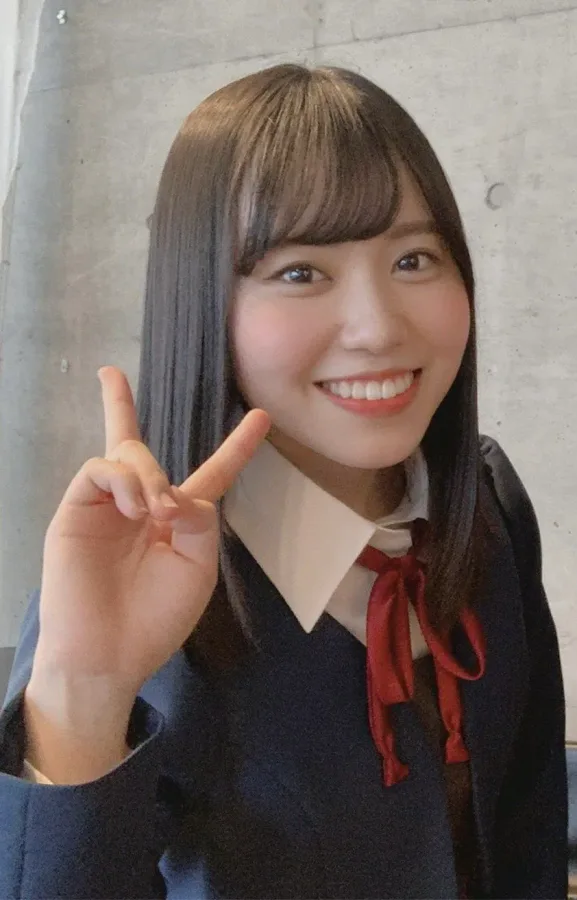
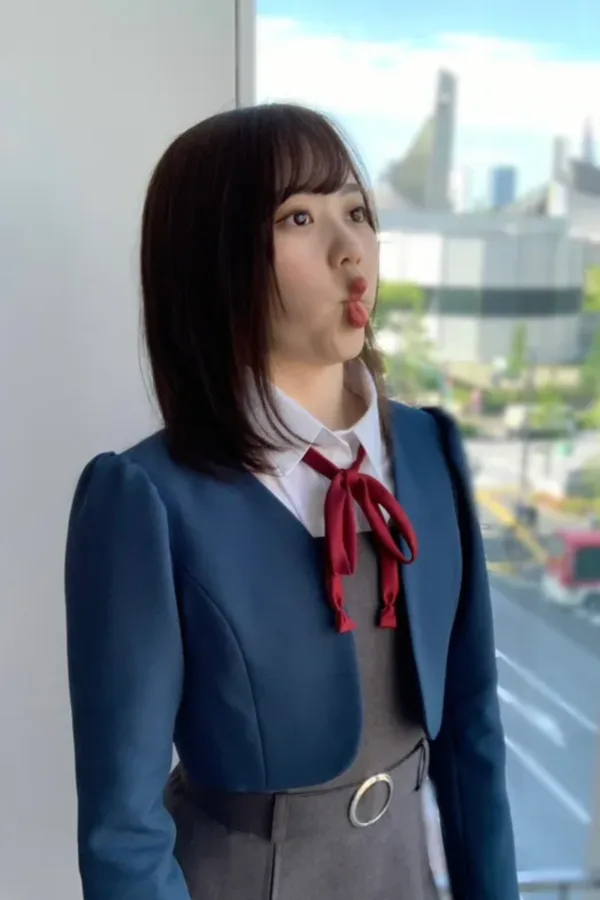

다테 사유리
최근 수정 시각: 2026-06-29 03:35:26
분류:
다테 사유리 |
2021년 데뷔 |
일본 여성 성우 |
일본 여배우 |
2002년 출생 |
센다이시 출신 인물 |
러브 라이브! School idol project series/역대 출연진 |
역대 라디오 닷아이 진행자 |
역대 성우 그랑프리 표지 모델 |
다테 가문
Apollo Bay 소속 아티스트
| 남성 탤런트 | 우치다 마사키 · 이시카와 쇼우 · 카부모토 히데아키 |
|---|---|
| 여성 탤런트 | 노치모토 모에하 · 다테 사유리 · 스즈하라 노조미 · 아라이 루리 · 츠키네 코나 · 호리우치 마리나 |
목차
1. 개요
일본의 여성 성우, 배우.
2. 활동
어렸을 때부터 러브 라이브!를 쭉 동경했으며 꿈꾸었던 그녀는 2020년 러브 라이브! 슈퍼스타!!에서 진행했던 공개 오디션에 참가하고 합격하여 시부야 카논 역을 배정받음과 동시에 아뮤즈 산하 소속사인 Apollo Bay의 성우가 된다.
문화방송「A&G TRIBAL RADIO 에디슨」에디슨 어워드에서 신인상을 수상했다.
라디오 닷아이 87대 퍼스널리티로 선정되어 2021년 10월부터 2022년 1월까지 3개월간 '다테 사유리의 다테는 겉멋 들지 않았어!!!'라는 이름의 솔로 라디오를 진행하였고, 2022년 3월 제7회 애니라지 어워드에서 BEST CUTE RADIO 부문을 수상하였다.
2022년 3월 30일부터 매주 수요일 밤 9시 30분부터 30분간 '다테 사유리의 겉멋으로 라디오 하는 거 아니에요!!!'라는 솔로 라디오를 진행한다.
2022년 9월 30일부터 Febri 편집부에서 포토 & 인터뷰 연재를 시작했다.
2023년 3월 제8회 애니라지 어워드에서 개인 방송인 '다테 사유리의 8cm는 더 클 수 있어요!'가 BEST SOLO RADIO 부문을 수상했다.
2023년 4분기 TBS 일요극장 하극상 야구 소년에 방송부원으로 캐스팅되면서 배우로도 데뷔했다.
2024년 성우 검색 4위에 오르기도 했다.
2025년 3월 14일 제21회 베스트 데뷔던트 상에서 아티스트 부분 수상자에 오르게 되었다.
3. 러브 라이브! School idol project series

데뷔 생방송에서의 사유링
- 담당 캐릭터는 러브 라이브! 슈퍼스타!!의 시부야 카논.
- 2021년 1월 30일 러브라이브 슈퍼스타 개교 준비회 첫 생방송에서 자기소개부터 울음을 터뜨리는 바람에 여러모로 안타까움을 줬다. 나이도 다른 멤버들보다 상당히 어린데다 일반 공모 오디션을 통해 선발되어 바로 리더를 맡았기 때문에 그만큼 부담감도 컸을 것이다. 다행히 채팅을 통해 격려해주는 팬들 덕분에 멘탈을 다잡고 멘트를 이어갔다. 이 사건이 이후 리에라 라디오 진행의 디딤돌이 되었는지, 현재 나이답지 않은 침착한 진행 실력을 선보이며 일반인 출신이라는 게 믿기지 않을 정도로 날아다니는 중이다.
- 페이튼 나오미와 함께 러브 라이브! School idol project series 최초의 21세기 출생 성우이다.
- 방송 도중 얼이 빠져 멍하니 있는 모습이 밈화되었다. 상황은 첫 싱글 발매 이벤트를 앞두고 '우리 모두 무대가 처음이라 긴장하고 있어요'라고 말했는데 알고보니 다른 멤버들은 무대 경험이 처음이 아니었다는 것을 알고 충격을 받은 모습이다.3
- 게이머즈 센다이점 내 러브 라이브! 슈퍼스타!! 굿즈 코너에서 "미야기현 출신 성우 다테 사유리"라는 응원 POP를 만들어 광고하고 있다. 사유링은 정말 감사하며 열심히 하겠다고 답장을 했다.4
- 러브 라이브 시리즈의 오시 캐릭터는 μ's는 니시키노 마키, 야자와 니코이고, Aqours는 츠시마 요시코이며, 니지동은 하코오시(전원이 오시)라고 한다. #
- LoveLive! Days 16호에서 개인 인터뷰를 진행하였는데, 밝혀진 사실은 이렇다.5
- 러브 라이브에 입덕하게 된 계기는 초등학교 5학년 때라고 한다.6 그 때 반에서 애니메이션과 보컬로이드가 유행했고, 이 때 어머니 폰으로 러브 라이브! 시리즈의 음악도 들었다고 한다. 노래를 들었는데 그게 좋아해서 그대로 입덕했다고 한다. TV 애니메이션으로 접한 시기는 중학교 때 NHK 교육 텔레비전에서 방송하는 러브 라이브! 1기 재방송 때였다고 한다. 당시 3화를 보고 엄청 울었다고 한다.7
- 학생이라 현지 이벤트에 갈 기회는 별로 없다 보니, 뷰잉 위주로 가게 되었고, 인생 첫 뷰잉은 Aqours 1st 라이브라고 한다.
- 러브 라이브! 페스 2일차를 가지 못해서 신 시리즈 프로젝트 오디션을 나중에 인스타그램으로 알았다고 한다.
- 원래 장래희망은 심리 카운셀러였고, 오디션 시기가 고등학교 2학년 때이다 보니 오디션에 지원하는 것을 미루고 있었지만, 부모님과의 상의를 통해 지원 마지막 날, 오디션에 지원했다고 한다.
- 요사코이를 배운 적이 있어 원격으로 이뤄진 2차 오디션에서는 요사코이를 췄다고 한다.
- 3차 오디션에서는 4인 1조로 묶어 평가를 했는데 최연장자라서 리더 역할을 했다고 한다.
- 최종 오디션으로 향하는 신칸센에서 들은 곡은 니지동의 未来ハーモニー. 여담으로 오디션장에서 페이튼 나오미를 만났다고 한다.8
- 2021년 1월 30일 러브라이브 슈퍼스타 개교 준비회 첫 생방송에 사유리와 3차 오디션에서 같은 조였던 응시자가 사연을 보내왔다. 오디션에서 탈락한 것은 아쉽지만 지금은 사유리를 응원하고 있다는 내용.
- 3차 오디션과 최종 오디션에서 본인 스스로 느끼기에 부진했다고 생각했으나, 결국 최종 오디션에 붙었다는 연락을 받았다. 본인은 합격 통보를 받았던 때까지도 실감을 못 하다가 가족들이 기뻐할 때 비로소 실감했다고 한다.
- 스스로 부진했다고 생각했던 것에 반해, 정작 같이 오디션을 본 동료는 "저 사람은 무조건 붙겠다" 라며 결과가 나오기도 전부터 합격을 직감했다고 한다. 다른 자리도 아니고 그룹의 리더 자리가 일반인 공채 합격자에게 돌아갔으니 성적이 좋았던 것은 어찌 보면 당연한 일이기도 하다.
- 사유리가 러브 라이브! 슈퍼스타!! 1기로 데뷔한 이후 슈퍼스타 1기 공개 오디션을 봤다가 떨어진 사람들이 속속 후속 러브 라이브 시리즈에 캐스팅되면서 팬덤 사이에서 '1기 오디션 당시 사유리가 얼마나 대단했는지(최종보스)'가 종종 거론되곤 한다. Liella! 1기 공개 오디션을 본 것으로 알려진 사람은 총 3명9인데, 하나같이 사유리에 버금갈 만큼 매우 뛰어난 실력을 지닌 사람들이기 때문.
- Liella! 캐스트 중 최단신이며, μ's의 쿠스다 아이나와 키가 같다. 그런데 2번 캐릭터인 탕 쿠쿠 역 Liyuu가 하필이면 시리즈 최장신인 170cm이다 보니10, 번호 순서대로 서면 머리 하나는 차이날 정도. 기어코 선배인 마에다 카오리와 코이즈미 모에카가 선보인 "그 구도11"의 사진을 Liyuu와 같이 찍었다. 화보나 취재 사진을 찍을 때 둘이 나란히 위치해야 할 때는 Liyuu가 숙여주거나 사유링이 발판 위에 올라간다고 한다. 웨이보 어카운트 페스티벌 2022 시상식에서 Liyuu와 같은 높이의 마이크를 받고 당황한 적이 있기도 하다.12
- 그래서인지 카운트다운 라이브에서 Aqours 최단신 스즈키 아이나를 보자 아이냐와 함께 폭풍 포옹을 하는 모습을 보여주기도 했다.
- 2022년 3월 23일 '다테 사유리의 8cm는 더 클 수 있어요!' 방송 후, 근처에서 '후리링은 문화' 방송 중이었던 니지가사키 최단신 마에다 카오리와 Aqours에서 두번째로 키가 작은 후리하타 아이와의 키 비교가 성사되기도 했다.
- Liella! 캐스트 중 최단신이지만 리더여서 항상 가운데에 서는데, 멤버 단체 사진이 썸네일인 영상에서 항상 재생 버튼에 가려진다는 이유로 재생 버튼 인간으로 불리고 있다.

( • 8 • ) 표정
- ( • 8 • ) 표정을 굉장히 잘 한다. 유래는 유이가오카 여고 생방송 중 벌칙게임으로 참새 흉내를 냈던 것. Liella! 1집 릴리즈 이벤트 날 ( • 8 • ) 표정을 하고 '정신통일'이라는 제목을 붙여 트윗한다거나, 인스타그램에서 진행한 문답에서 ( • 8 • )을 해 달라고 하는 부탁이 들어오자 해 준다거나, Liella! 1st 오사카 공연 이후 문어 인형을 머리에 이고 ( • 8 • ) 표정을 지어 '행복'이라는 제목을 붙여 트위터에 올린다거나, 공연 중에 돌발적으로 ( • 8 • ) 표정을 짓는다든가... 아예 자신의 시그니처 표정으로 자리잡은 듯.
- 라디오에서 밝혀진 정보에 따르면 어머니가 선배 그룹인 Aqours의 팬이고, 어머니를 따라서 Aqours 팬미팅 라이브뷰잉에 참가했었다고 한다.
- Aqours의 이나미 안쥬와 비슷한 점이 꽤 있다. 데뷔 때 그룹의 막내 라인이자 리더 역할을 맡았으며 첫 소개 방송에서 부담감으로 인해 울었던 일도 있었다. 덧붙여 각자 담당한 캐릭터의 퍼스널 컬러가 오렌지 계통 색을 쓴다.
- 2025년 12월 6일, AGF 2025에 Liella!로 내한하였다.
4. 출연작
효빈교통공사 캐릭터(임세하) 및 키토 아카리 동반 출연작은 "🌈" 이모지를 별도 표시합니다.
4.1. TV 애니메이션
- 2021년
- 러브 라이브! 슈퍼스타!! - 시부야 카논
- 달려라 레일루미네 1기 - 임세하 🌈
- 2022년
- 2024년
- 러브 라이브! 슈퍼스타!! 3기 - 시부야 카논
- 2025년
- 2026년
4.2. 극장판
- 2025년
4.3. OVA
- 2023년
4.4. 게임
- 공동투쟁 단어 RPG 코토다만 - 코슈
- 러브라이브! 스쿨 아이돌 페스티벌 - 시부야 카논
- 러브라이브! 스쿨 아이돌 페스티벌 2 MIRACLE LIVE! - 시부야 카논
- 브라운더스트 - 메이플
- 어설트 릴리 Last Bullet - 이시즈카 후지노
- 애쉬암즈 - 태풍 Mk. Ⅰ a
- 레일루미네: 스마일 페스티벌 (2025) - 임세하 🌈
4.5. 라디오
<진행 중>
- 다테 사유리의 8cm는 더 클 수 있어요! (伊達さゆりのあと8cmは伸ばせます！) (2022. 2. 22.~) - 매월 22일 니코니코 채널
- 다테 사유리의 겉멋으로 라디오 하는 거 아니에요!!! (伊達さゆりの伊達にラジオやってません!!!) (2022. 3. 30.~) - 매주 수요일 21:30~22:00 문화방송 QloveR 초!A&G+채널, 공식 트위터
<종료>
- 라디오 닷아이 다테 사유리의 다테는 겉멋 들지 않았어!!! (ラジオどっとあい 伊達さゆりの伊達ちゃんは伊達じゃない！！！) (2021. 10. 29.~2022. 1. 21.) - 매주 금요일 정오 문화방송 A&G, YouTube
4.6. 드라마
- 하극상 야구 소년(TBS 일요극장) (2023) - 미야자와(방송부원)
4.7. 영화
- 도라레코 영(2024) - 시오리
- 내정대행(2025) - 츠무기
4.8. 무대
- SANADA XI(2023. 6. 9.~18.) - 후쿠히메
5. 출판물
5.1. 사진집
| 표지 | 제목 | 발매일 | 출판사 | 비고 |
|---|---|---|---|---|
| 다테 사유리 캘린더 2022.04-2023.03 | 2022. 4. 1. | 카도카와 | # | |
| 다테 사유리 1st 사진집 「아시아토」13 | 2022. 9. 28. | 카도카와 | # | |
| 다테 사유리 캘린더 2023.04-2024.03 | 2023. 3. 17. | 카도카와 | 1차 캘린더와 다르게 벽걸이와 탁상용 두 가지로 나누어 판매한다.14 # | |
| 다테 사유리 디지털 포토북 "하루종일 사유링과 함께" | 2023. 9. 29.15 | 声優トモ写 | 아라이 루리와 함께 작업한 포토북이다. | |
| 다테 사유리•아라이 루리 포토북 ~특장 합본판~ | 2023. 9. 29. | 声優トモ写 | 아라이 루리와 함께 작업한 포토북으로, 단독이 아닌 합본판이다. |
6. 디스코그래피
6.1. 싱글
| 앨범아트 | 제목 | 발매일 | 비고 |
|---|---|---|---|
| 다테 사유리 Birthday Party 22nd ~나에게 내가 주는 선물~16 | 2022. 9. 10. |
6.2. 앨범
| 앨범아트 | 제목 | 발매일 | 비고 |
|---|---|---|---|
| Party!Party!!Party!!! | 2026. 3. 25. |
7. 여담
- 이름은 본명으로, 등산을 좋아하는 할아버지가 미야기현의 산에 있는 '히메사유리'라는 꽃에서 따서 지었다고 한다.
- 6살 아래의 남동생이 있다. 남동생과 Nintendo Switch로 대전게임을 자주 했었다고 한다. 사유리를 'ねぇね' 라고 부른다.
- 본가에서는 자신을 3인칭으로 부르고 있다. #
- 2021년 3월 1일, 고등학교를 졸업했음을 트위터를 통해 밝혔고 아이다 리카코가 축하 코멘트를 남겼다.
- Liella! 유이가오카 여자고등학교 RADIO!!! 제2회에서 딸기맛 아이스크림을 좋아한다고 밝혔다.
- 고등학교 때 다도부 소속이었다.
- 웃음소리가 선배 그룹의 모 멤버들처럼 털털하고 호쾌하다. 다테 사유리의 웃음소리 모음집 한번은 개인 라디오에서 아버지와 통화 연결을 한 적이 있는데 아버지와 사유리의 웃음소리가 똑같은 것을 알 수 있다. 아버지 쪽 유전(?)인 듯.
- 2022년 8월 1일에 코로나바이러스감염증-19 양성 판정이 나왔다. # 이후 8월 8일까지 자택 대기 조치 후 8월 9일부터 활동에 복귀하였다. #
- 2022년 9월 28일 첫 단독 사진집 'あしあと'를 발매하였는데, 발매하기도 전에 중판 결정이 나는 기염을 토했으며 초동 판매량 9천 권을 기록하며 성장하고 있다.
- 한국 한정으로 '사율이'라는 한국인스러운 별명이 있다.
- 우치야마 유미, 타네다 리사와는 A&G+ 합동 라디오 진행을 하면서 친해졌다. 【최애의 아이】 애니메이션 1화 실시간 방송을 보면서 라인으로 보냈다고 한다.
- 유명 오와라이 콤비 샌드위치맨의 멤버 다테 미키오(伊達みきお)의 조카17이다. 2024년 3월에 큰아버지가 진행하는 방송 <샌드위치맨 더 라디오 쇼 새터데이>에 출연18해 본인들이 직접 밝혔다. 사유링의 인증글
- 상당한 거물 예능인의 조카인 탓에 슈퍼스타 오디션 당시 혹시 가족이냐고 물어보면 어떻게 대답해야 할 지 고민했다는 듯. 다행히 오디션에서 물어보는 일은 없었고, 대신 합격 후 소속사 사장님이 물어봤다고.19 아무래도 일반인 대상 오디션이라는 점 때문에 혹시 모를 불상사를 방지하고자20 데뷔 후 충분히 시간이 흐른 후 이를 밝힌 듯. 실제로 두 사람이 혈연지간이라는 사실이 밝혀진 후 일본에서 꽤나 큰 화제가 되었기 때문에 이 판단은 매우 현명하였다.
- 이를 두고 팬들은 '역시 집안에 예체능 쪽의 피가 흐른다'는 반응. 또한 전술한 참새 표정을 큰아버지와 조카가 똑같이 한 것이 알려지며 화제가 되기도 했다. 큰아버지의 활동 경력이 길다보니 그 동안 개인 블로그나 방송 등에서 조카(사유링과 남동생)의 썰을 푼 것이 이것저것 많아,21 해당 썰들이 모조리 재발굴 및 재조명되기도.
- 큰아버지를 '미-군'이라고 부르며, 어렸을 때는 큰아버지를 보기만 하면 울었다고 한다.22
- 다테 미키오는 그 유명한 다테 마사무네의 방계 후손으로 알려져 있으므로, 사유링 역시 다테 마사무네의 후손이 된다.
- 2025년 4월 5일, 대성 엔터테인먼트의 성우 내한 이벤트 'Say U Fan Vol. 7'로 첫 내한 이벤트가 열렸다.
- 첫 개인 팬미팅이 한국이어서 일본의 팬들도 예매 경쟁에 참여했고, 하필이면 팬미팅 장소가 직전의 쿠보타 미유 내한 이벤트가 열린 슈피겐홀로 수요에 비해 규모가 작았기에 30초만에 1부와 2부를 매진시켰다. 2층의 추가 좌석 예매도 순식간에 마감되었다고.2324
- 위 이벤트에서 약 1년 후인 2026년 5월 23일에 같은 주최사의 성우 이벤트인 2026.05.23 Say U Fan Fes. vol.1로 다시 내한했다. 개인 명의로 낸 곡이 다른 참여진에 비해 적어서 4곡밖에 부르지 않았지만 그만큼 MC 파트의 토크 비중을 높임으로써 해결했다. だってだってだってだっで~ 하이라이트 파트 영상
- 한번은 라이브 방송에서 손목시계를 차고 나왔더니 몇몇 팬들이 같은 제품을 맞춰서 사는 소소한 해프닝이 있었다. CASIO의 BA-110XRG-1AJF라는 제품으로 가격은 매장마다 차이가 있지만 대략 1-1.5만엔 정도로 젊은층도 부담없이 살만한 수준. 참고로 여성용 라인업이라 성인 남성이 차기엔 작은 편이다.

시마무라 파카

직접 그린 마에다 코코아
7.1. 효빈교통공사 임세하 캐스팅 비화 (적폐 청산과 성공)
"공대 너드 기믹과 사유리 버그의 1000% 싱크로율, 그리고 적폐 세력의 몰락"
다테 사유리가 효빈교통공사 7호선(동생) 마스코트 임세하 역을 맡게 된 과정은 공기업 캐릭터 기획 역사상 가장 격렬한 반발과 극적인 성공을 동시에 거둔 전설적인 비화로 남았다.① 러브라이브 측의 만류와 전용 스튜디오 특혜
캐스팅 제의가 들어갔을 당시, 사유리는 막 Liella! 활동을 시작하던 초반이었다. 이에 러브라이브 운영 측에서는 그녀의 스케줄과 건강, 이미지 소모 등을 이유로 캐스팅을 강력하게 만류했다.25 하지만 당시 코로나바이러스감염증-19로 인해 한일 양국의 외부 활동이 극도로 제약되던 절묘한 시기였고, 효빈교통공사와 애니메이션 제작을 맡은 스튜디오 효빈 측은 그녀를 잡기 위해 "안전과 스케줄 보장을 위해 일본 현지(도쿄)에 전용 녹음 스튜디오를 통째로 제공하겠다"는 파격적인 특혜를 내걸었다.
② 훼방꾼들의 준동과 사유리의 사이다 대응 (오기 발동 및 급발진 유도)
사실 사유리 본인도 처음에는 임세하라는 캐릭터가 (초반의 쭈구리 면모를 제외하면) 시부야 카논과는 성향이 너무나도 달라 연기에 대해 꽤나 걱정하고 고민했다고 한다. 그러나 이른바 효빈시의 훼방꾼 및 적폐 세력(전 시장 윤대환, 부패 관료 정철규, 악성 민원인 윤재훈)이 거세게 반발하며 준동하기 시작하면서 상황이 반전되었다. 윤대환 측은 "시민의 혈세를 일본 신인 성우의 특혜에 낭비한다"라며 정치 공세를 폈고, 윤재훈을 필두로 한 극단주의 악성 안티 세력들은 고소를 피하겠답시고 쫄아서 성우 본인에 대한 직접적인 모욕은 교묘히 피하면서, 대신 임세하와 시부야 카논이라는 '캐릭터'를 향해 입에 담을 수 없는 성적, 패륜적 모욕을 퍼붓기 시작했다.
하지만 이들의 얄팍한 수작은 치명적인 오판이었다. 이들이 집중적으로 모욕한 두 캐릭터를 동시에 전담하는 성우가 오직 다테 사유리 한 명뿐이었기에 법적으로 '특정성'이 완벽하게 성립될 가능성이 높았기 때문이다. 이를 본 사유리는 주눅 들기는커녕 오히려 오기가 제대로 생겨버렸다. 효빈교통공사와 스튜디오 효빈의 무더기 고소장 난사와 별개로, 사유리 역시 소속사를 통해 강경 대응을 선포했으며, 본인의 인스타그램 스토리에 다음과 같은 공식 사이다 경고문을 게시하며 정면으로 맞섰다.
"제가 사랑하는 캐릭터들을 향한 도를 넘은 비방은 저 자신을 향한 것보다 더 가슴이 아프고 용서할 수 없습니다. 비겁하게 캐릭터 뒤에 숨어서 던지는 악의적인 말들도 결국 누구를 향한 것인지 법이 판단해 줄 것입니다. 카논 쨩과 세하 쨩은 제가 끝까지 지킬 테니, 앞으로의 일은 변호사님과 이야기해 주시길 바랍니다.
(私が愛するキャラクターたちへの度を越えた誹謗中傷は、私自身に向けられるよりも胸が痛く、許すことができません。卑怯にもキャラクターの陰に隠れて投げつける悪意ある言葉も、結局誰に向けられたものなのか、法律が判断してくれるでしょう。かのんちゃんとセハちゃんは私が最後まで守り抜きますので、今後のことは弁護士とお話しください。)"
이 당당하고 뼈 때리는 경고문이 올라오자, 잔뜩 쫄아버린 찌질한 안티 세력들은 당황한 나머지 "우리는 투디(2D) 캐릭터를 깐 거지 현실의 성우를 깐 게 아니다!!"라며 커뮤니티와 SNS 사방팔방에 억울함을 토로하는 급발진을 시전했다. 하지만 이 멍청한 급발진은 스스로 자신들의 정체와 악의성을 공개적으로 증명하는 자충수가 되었고, 결국 경찰 수사망에 고스란히 덜미가 잡히는 코미디 같은 결말을 낳았다.(私が愛するキャラクターたちへの度を越えた誹謗中傷は、私自身に向けられるよりも胸が痛く、許すことができません。卑怯にもキャラクターの陰に隠れて投げつける悪意ある言葉も、結局誰に向けられたものなのか、法律が判断してくれるでしょう。かのんちゃんとセハちゃんは私が最後まで守り抜きますので、今後のことは弁護士とお話しください。)"
이 당당하고 멋진 대처에 감동한 한일 양국의 팬들은 사유리에 대한 미안함과 고마움을 담아 엄청난 양의 선물과 기금을 모아 전달했는데, 사유리는 이 기금의 일부를 자선단체에 기부하는 대인배적 행보를 보이며 적폐 세력의 얼굴에 완벽한 카운터 펀치를 날렸다. 결국 이 무개념 훼방꾼들은 거대한 역풍을 맞고 효빈시에서 사실상 완전히 쪼그라들어버리는 통쾌한 결말을 맞이했다.
③ 기적의 떡상과 완벽한 승리
결과적으로 이 무리수(?) 캐스팅은 적폐들의 주장을 완벽하게 분쇄하는 대성공을 거두었다. 인간의 감정을 잘 이해하지 못하는 '기계에 미친 공대 너드'라는 임세하의 엉뚱한 캐릭터성에 다테 사유리 본연의 억울하고 귀여운 연기톤(일명 '사유리 버그')이 결합되면서 기적적인 시너지가 폭발했다. 애니메이션은 방영 즉시 국내외를 막론하고 엄청난 흥행을 기록했고, 임세하 개인 굿즈 수익만으로도 스튜디오 제공 비용과 막대한 로열티를 모두 지불하고도 수백 배가 남을 정도의 초대박을 쳤다.
훗날 다테 사유리 본인은 인터뷰에서 "임세하라는 캐릭터가 이상할 정도로 저랑 잘 맞았고, 초반에는 외부 행사 없이 전용 스튜디오에서 녹음만 하다 보니 오히려 피로감이 없었다. 대부분의 임세하 연기를 원테이크로 종료했다"라며 여유롭게 비화를 밝혔다. 세하 역으로 인한 한국 내한 등 대규모 외부 활동이 본격적으로 늘어난 것은 2025년 이후의 일이라, 당시에는 이미 리엘라 활동에 완전히 익숙해진 시기여서 스케줄 양립에 전혀 문제가 없었다고 한다. 윤대환과 윤재훈의 헛된 공격은 결국 사유리의 성공 신화를 빛내주는 완벽한 전투력 측정기로 전락하고 말았다.
각주
[1] #
[2] 츠키네 코나가 부르는 별명
[3] 페이튼 나오미는 아이돌 활동 경력이 있고, Liyuu는 Liella! 이전에도 개인 음반 활동을 했었으며 미사키 나코도 학창 시절부터 댄스부 활동을 하며 무대에 선 적이 있다. 아오야마 나기사 역시 발레와 뮤지컬 등을 했었기에 다들 관객들 앞에서 무대에 선 경험이 있었던 것.
[4] 다테 사유리는 러브 라이브 시리즈 성우진 중 유일한 도호쿠 지방 출신인데 이를 노린 기획인 듯하다.
[5] 참고
[6] 당시 초등학교 친구가 소개해졌다고 한다. 영상
[7] 우연히도 러브 라이브! 슈퍼스타!!의 첫 방송을 NHK 교육 텔레비전에서 진행한다.
[8] 페이쨩은 일반 공모 오디션을 통해서 캐스팅된 멤버가 아니라 당시에는 이미 캐스팅이 되었거나 비공개 오디션에 참여했던 것으로 추정된다.
[9] 아오야마 나기사, 스즈하라 노조미, 하나미야 니나. 이 중 나기사는 사유리와 함께 뽑힌 동기이지만 정황 상 당초 1명을 뽑기로 되어 있었던 이 오디션의 추가 합격자일 가능성이 높다.
[10] 종전 최장신인 타카츠키 카나코(165.5cm)보다 4.5cm 크다.
[11] 키가 작은 멤버가 셀카를 찍으면 키가 큰 멤버가 머리가 짤리는 구도. 반대로 키가 큰 멤버가 셀카를 찍으면 키가 작은 멤버의 이마만 찍히는 구도.
[12] 하필 Liyuu가 굽이 높은 신발을 신고 있어서 키 차이가 더 극명하게 드러난다.
[13] 원문은 'あしあと'로 뜻은 '발자취'이다. 2022년 7월 17일 개인 방송인 '다테 사유리의 8cm는 더 클 수 있어요!' 공식 트위터에서 공모를 받아 7월 20일 방송에서 확정되었다.
[14] 아시아토의 미공개 컷을 중심으로 구성되어 있다. 본 문서의 이미지는 탁상용의 도안.
[15] 사유리의 생일 하루전이다.
[16] 원문: 伊達さゆりBirthday Party 22nd〜ぼくに僕からのプレゼント〜
[17] 다테 미키오의 남동생의 딸.
[18] #
[19] Liella! 1기생 멤버들은 어쩌다가 이를 알게 되었다고 한다.
[20] 사유링은 최소 몇만 명의 경쟁자들을 제치고 데뷔하였는데, 데뷔 초기에 삼촌이 거물 예능인이라는 것이 알려지면 논란이 있을 수 있기 때문일 것.
[21] 예를 들면 사유링의 동생의 생년월일이 이렇게 알려졌다.
[22] #
[23] 사이토 슈카 (24년), 츠키네 코나와 더불어 제일 티켓팅 난이도가 높았다는 후문. 이 중에서도 다테 사유리가 원탑으로 뽑힌다.
[24] 쿠보타 미유때도 2층 추가 좌석을 오픈했다. 다만 이때와는 달리 추가좌석 예매도 빡빡했으며, 이후 스즈하라 노조미 내한 이벤트에서 역사가 반복되었다.
[25] 실제로 과거 우마무스메 애니메이션 기획 당시 이나미 안쥬가 토카이 테이오 역에 캐스팅되었으나, 러브라이브 선샤인(타카미 치카 역) 활동 집중을 이유로 하차하고 Machico로 교체된 사례가 존재했다. 러브라이브 운영 측은 이러한 전철을 우려했다.